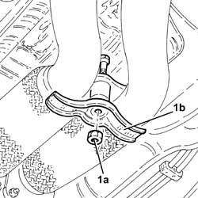
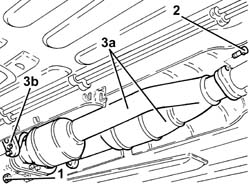
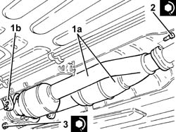

1080B65 CATALYTIC CONVERTER ASSEMBLY R R
- Path
- Procedures > 10 ENGINE UNIT > 1080 EXHAUST EMISSION CONTROL SYSTEM > 1080B EXHAUST EMISSION CONTROL SYSTEM > 1080B65 CATALYTIC CONVERTER ASSEMBLY R R
- Kind
- repair procedure (removal / refitting; the operation number is the code)
- Applies to
- engines: 3.2 V6; all production periods
- Interactive page
- https://sloeber94.github.io/elrnDB-aGt/en/#/125001123
Applies to: engines: 3.2 V6; all production periods
 Removing
Removing
 Refitting
RefittingPosition the vehicle on the ramp
Ensure that the ignition key is in OFF position, then disconnect the battery negative terminal (-).
Name | Connector | |
|---|---|---|
- | Battery | See A1B BATTERY ( BATTERY NEGATIVE ) |
Proceed with removal
Op. 7055B54 UNDER-ENGINE GUARD - R R
Proceed with removal
Proceed with removal
Op. 1080B96 LEFT REAR LAMBDA SENSOR ON CATALYTIC CONVERTER R R
1. Undo the bolt (1a) and remove the bracket (1b) joining the exhaust pipes between the preconverters and the catalytic converters.
Op. 1080B97 RIGHT REAR LAMBDA SENSOR ON CATALYTIC CONVERTER R R

Applies to: engines: 3.2 V6; all production periods
1. Undo the nuts fixing the exhaust pipes between the preconverters and the catalytic converters, catalytic converter assembly side.
2. Undo the bolts fixing the catalytic converter assembly, intermediate silencer side.
3. Remove the catalytic converter assembly (3a), complete with gaskets, after having released it from the flexible mountings (3b).

Applies to: engines: 3.2 V6; all production periods
Refitting
Removing1. Place the catalytic converter assembly (1a) in its housing complete with gaskets and secure it to the flexible mountings (1b).
2. Tighten the bolts securing the catalytic converter unit, intermediate silencer side, to the specified torque.
 | Fastening | Component | Ø | Value (daNm) |
|---|---|---|---|---|
2 | Bolt | CATALYTIC/ CONVERTER/S | M8 | (Intermediate silencer side) 2.3 ÷ 2.8 |
3. Tighten the nuts fixing the exhaust pipes between the catalytic preconverters and converters, catalytic converter assembly side, to the recommended torque.
| Fastening | Component | Ø | Value (daNm) |
|---|---|---|---|---|
3 | Nut | LEFT PRECONVERTER.CONVERTER PIPE/ | M8 | (Catalytic converter side) 2.3 ÷ 2.8 |

Applies to: engines: 3.2 V6; all production periods
Place the bracket joining the exhaust pipes between the catalytic preconverters and converters back in their housing and tighten the bolt.
Proceed with refitting
Op. 1080B97 RIGHT REAR LAMBDA SENSOR ON CATALYTIC CONVERTER R R.
Proceed with refitting
Op. 1080B96 LEFT REAR LAMBDA SENSOR ON CATALYTIC CONVERTER R R.
Proceed with refitting
Op. 7055B54 UNDER-ENGINE GUARD - R R.
Connect the negative (-) battery terminal
Remove the car from the ramps.
Topics linked from this page (3)
- 1080B96 LEFT REAR LAMBDA SENSOR ON CATALYTIC CONVERTER R R
- 1080B97 RIGHT REAR LAMBDA SENSOR ON CATALYTIC CONVERTER R R
- 7055B54 UNDER-ENGINE GUARD - R R